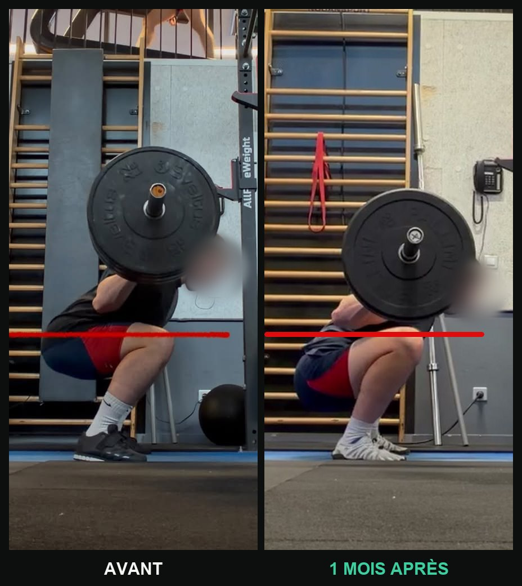

Le plan de Jonathan, pompier
30 jours pour débloquer son squat.
Avant, il squattait en chaussures d'haltéro, toujours à la limite. Un mois plus tard, sans chaussures compensées, et plus bas. Voici le plan exact que l'app a construit pour lui.

Le blocage
Le tibia n'avançait pas.
Pour descendre en squat, le genou doit passer devant le pied. Chez Jonathan, les chevilles et les hanches bloquaient ce passage. Résultat : buste qui plonge, squat à la limite, et des chaussures d'haltéro pour compenser à chaque séance.
En plus, une douleur à la cheville gauche qu'il traînait déjà avant d'arriver.
Étape 1 · Le bilan
D'abord, trouver le maillon faible.
Avant le moindre exercice, Jonathan passe le diagnostic de l'app : des tests articulation par articulation. Verdict net : les chevilles sont loin derrière le reste.
Scores sur 100. Les hanches sont correctes au repos, mais il leur manque de la force en bout d'amplitude (17 points d'écart entre passif et actif). C'est pour ça qu'on les a travaillées aussi.
L'app fixe alors la cheville en priorité, avec la hanche en soutien. Pas un programme « squat » générique : un programme construit sur ses chiffres.
Étape 2 · Sa vie réelle
Un plan qui rentre dans des gardes de pompier.
Jonathan est pompier : des horaires qui bougent, un métier physique, et à côté du streetlifting, de la course et de la natation. Impossible de lui demander 1 h 30 par jour.
Donc l'app part de son temps réel. Le format du club : 15 à 20 minutes, calées quand on peut. Jonathan les faisait souvent juste avant son entraînement.
Sa vraie semaine 4 (20 au 26/11), relevée dans l'app. Un carré = un bloc d'exercices. Deux jours sans séance, et ce n'est pas grave : le plan repart le lendemain.
Étape 3 · Les exercices
La même séance. Une dose qui monte.
La mobilité, c'est un mélange de force, de contrôle et de souplesse. C'est une qualité musculaire, mais elle dépend avant tout du système nerveux. Et le système nerveux apprend par la fréquence : le même signal, le plus souvent possible.
C'est pour ça que, dans le club, les séances restent les mêmes : par exemple deux séances qui alternent, faites 2 à 3 fois chacune par semaine. Jonathan a refait les mêmes exercices cheville et hanche pendant tout le mois. Ce qui change chaque semaine, c'est la dose : on pousse l'articulation un peu plus loin, un peu plus fort, jusqu'au niveau voulu.
- S1Apprendre la positionTenir 60 s en bout d'amplitude, à 30 % de son effort. Amplitude niveau 1.
- S2Aller plus loin50 s à 45 %. On descend d'un cran : amplitude niveau 2.
- S3Encore un cranMême dose, amplitude niveau 3. Les cercles articulaires passent à 60 %.
- S4-5Rendre la position fortePlus court, beaucoup plus fort : 3 × 20 s à 80 % dans la nouvelle amplitude.
Le bas du squat n'est pas qu'une question de souplesse : il faut aussi être fort dans cette position. Les semaines 1 à 3 la gagnent, les semaines 4 et 5 la rendent solide.
Le fil rouge
Sa douleur, séance après séance.
Après chaque séance, Jonathan note sa douleur de 0 à 10. L'app s'en sert pour régler la suite : l'intensité ne monte que quand la douleur redescend.
Une colonne = une séance. Des pics à 5 et 6 sur 10 jusqu'au 16/11, puis 0 à 2 sur 10 depuis le 19/11.
Exemple
Une de ses séances, semaine 4.
Pour que ce soit concret, voici à quoi ressemble une séance de Jonathan au moment où la dose est la plus forte.
- Hanche : rotation vers l'intérieur, tenue en bout d'amplitude3 × 20 s à 80 % de l'effort
- Hanche : grands cercles contrôlés, avec une charge2 séries, 2 tours dans chaque sens, à 70 %
- Cheville : bascule du pied vers l'intérieur, tenue3 × 20 s à 80 %
- Cheville : contracter, relâcher, gagner du terrain2 séries à 40 %
- Cheville : grands cercles contrôlés2 séries, 2 tours dans chaque sens, à 70 %
Les exercices exacts et leurs réglages dépendent du bilan de chacun. Copier cette séance telle quelle ne donnera pas le même résultat à quelqu'un dont le blocage est ailleurs.
Un mois après
« T'as changé mon squat. »
Juste une bonne dorsiflexion et une meilleure utilisation de ma mobilité de hanche.Jonathan, 27/11
Je prends un kiff à faire du squat, j'ai l'impression de passer le blocage.Jonathan
Pas des heures d'étirements. Les séances que l'app lui donnait, souvent au début de ses entraînements.
Pour toi
Le même chemin, avec ton blocage à toi.
- 1Le bilanTu passes les tests. L'app trouve ton maillon faible, pas celui de Jonathan.
- 2Ta semaine, ton sport15 à 20 minutes, calées sur tes jours, tes horaires et ton sport.
- 3Tes exercices, ta doseLes mêmes séances répétées, une dose qui monte, réglée sur tes retours.
Édition 1 · Black Friday
12 semaines pour débloquer ton mouvement.
La saison commence le 4 janvier. Cadeau Black Friday : 1 mois offert, ton accès s'ouvre dès le paiement et tu t'entraînes tout décembre, sans attendre.
119 €ou 4 × 29,75 € avec PayPaljusqu'au lundi 30/11, 23 h 59. Ensuite, 149 € en mars.
Je prends ma placeRéalise 80 % de ton plan et tu récupères 50 % de ce que tu as payé.
Dans un mois, c'est toi qui m'envoies ta photo.
Damien